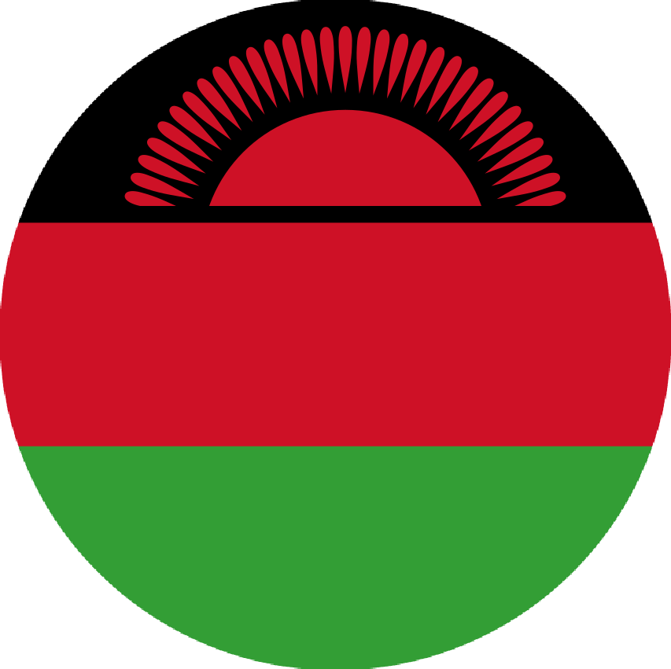
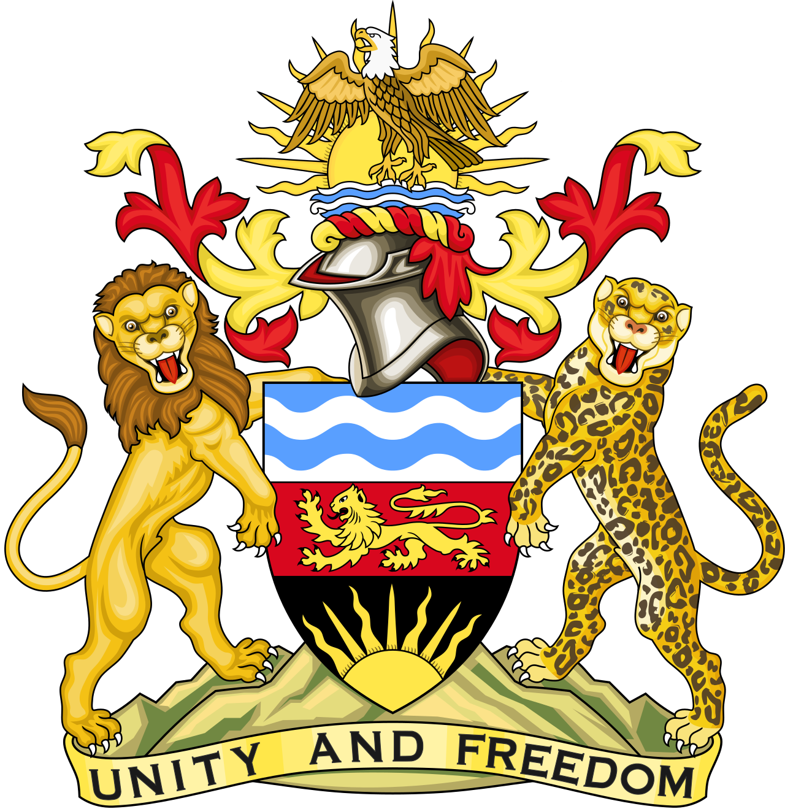
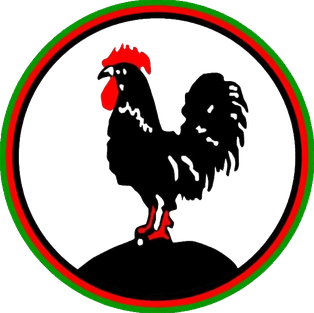
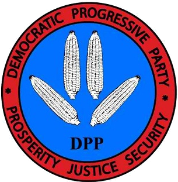
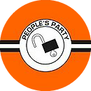

REPUBLIC OF MALAWI


"Unity and Freedom"
FIRST PRESIDENT


- Hastings Kamuzu Banda
- Political Party: M.C.P.
- In Office From: 6 July 1966.
- In Office until: 24 May 1994.
- Born: ?- ?- 1898.
- Died: 25 November 1997.
- Aged: 98-99 Years Old.
SECOND PRESIDENT

- Bakili Muluzi
- Political Party: U.D.F.
- In Office From: 24 May 1994.
- In Office Until: 24 May 2004.
- Born: 17 March 1943.
- Aged: 81 Years Old.
THIRD PRESIDENT


- Bingu wa Mutharika
- Political Party: D.P.P.
- In Office From: 24 May 2004.
- In Office Until: 5 April 2012.
- Born: 24 February 1934.
- Died: 5 April 2012. [in Office]
- Aged: 78 Years Old.
FOURTH PRESIDENT


- Joyce Hilda Banda
- Political Party: P.P.
- In Office From: 7 April 2012..
- In Office Until: 31 May 2014.
- Born: 12 April 1950.
- Aged: 74 Years Old.
FIFTH PRESIDENT

- Arthur Peter Mutharika
- Political Party: D.P.P.
- In Office From: 31 May 2014.
- In Office Until: 28 June 2020
- Born: 18 July 1940.
- Aged: 84 Years Old.
SIXTH PRESIDENT

Incumbent President
- Lazarus McCarthy Chakwera
- Political Party: M.C.P.
- In Office From: 28 June 2020.
- In Office Until: Present.
- Born: 5 April 1955.
- Aged: 69 Years Old.